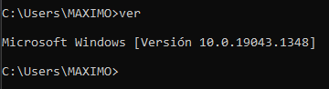
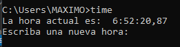

El comando ver nos muestra en pantalla la versión actual del sistema operativo
ver
El comando cls nos permite borrar la pantalla dentro del símbolo de sistema
cls
El comando time nos permite visualziar la fecha del sistema y si deseamos podemos cambiarla
TIME [/T | <"hora">]
El comando date nos permite ver la fecha del sistema y si deseamos podemos cambiarla
DATE [/T | <"fecha">]
Muestra el nombre del directorio actual o cambia el directorio actual. Si se usa solo con una letra de unidad cd muestra los nombres del directorio actual en la unidad especificada. Si se usa sin parámetros, cd muestra la unidad y el directorio actuales.
cd [/d] [<"drive>"":][<"path>"]
cd [..]
chdir [/d] [<"drive">:][<"path>""]
chdir [..]
Crea un directorio o un subdirectorio.
md [<"drive">:]<"path">
Muestra una lista de los archivos y subdirectorios de un directorio.
dir [<"drive">:][<"path">][<"filename">] [...] [/p] [/q] [/w] [/d] [/a[[:]<"attributes">]][/o[[:]<"sortorder">]] [/t[[:]<"timefield">]] [/s] [/b] [/l] [/n] [/x] [/c] [/4] [/r]
Proporciona información de ayuda para los comandos de Windows.
HELP [comando]
Mueve archivos y cambia el nombre a archivos y directorios.
Mover uno o más archivos:
MOVE [/Y | /-Y] [unidad:][ruta]nombrearchivo1[,...] destino
Cambiar el nombre a un directorio:
MOVE [/Y | /-Y] [unidad:][ruta]nombredirectorio1 nombredirectorio2
[unidad:][ruta]nombrearchivo1 Especifica la ubicación y el nombre del
archivo o archivos que quieres mover.